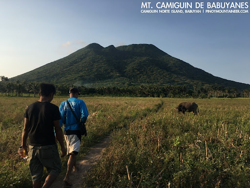

Explore Camiguin on Foot
Camiguin offers a remarkable range of hiking and trekking experiences, from gentle nature walks through coconut groves to the demanding summit trek of Mt. Hibok-Hibok. The island's dramatic volcanic terrain creates a landscape full of natural drama — steep ridgelines, dense jungle, steaming vents, and cascading waterfalls hidden within the forest.
The most iconic trek is the ascent of Mt. Hibok-Hibok, an active stratovolcano that rewards those who reach its summit with a sweeping 360-degree view of the island and the surrounding sea. For those seeking something less strenuous, trails around the base of the volcano pass through scenic farmland, rural villages, and natural springs.


Mt. Hibok-Hibok Trek
The full summit trek takes 6–8 hours and requires a registered guide from the DENR. The trail passes through several distinct ecosystems and crater areas before reaching the peak.
Katibawasan Falls
A beautiful 70-meter waterfall accessible via a short walk from the road. The cool natural pool at its base is perfect for a refreshing dip after exploring the surrounding trails.
Preparation Tips
Wear trail shoes and bring rain gear regardless of the forecast. Hire a local guide for any mountain trekking — they know the terrain and ensure your safety on the trail.